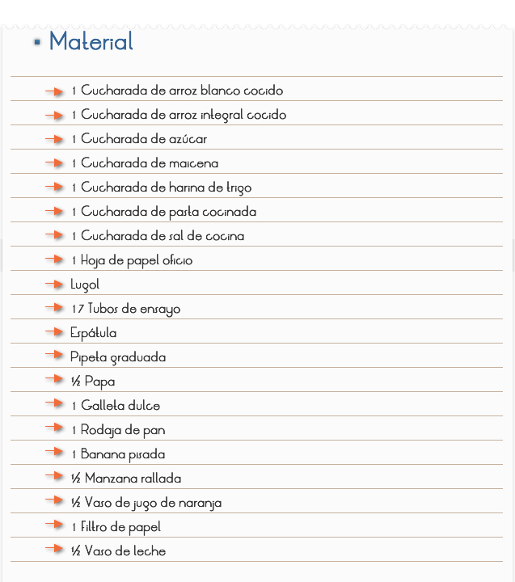
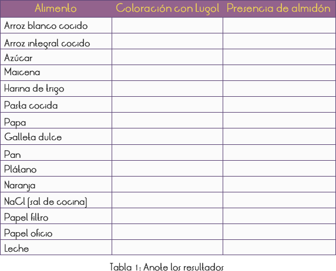
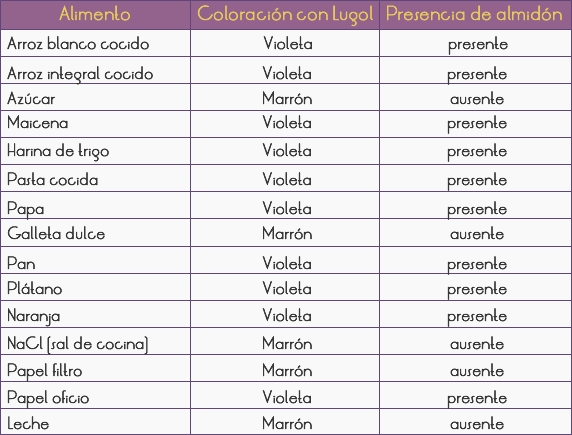

Introducción
El almidón es el material de reserva de los vegetales. En la medida que las moléculas de glucosa son producidas durante la fotosíntesis, pueden ser consumidas con el objetivo de liberar energía, o pueden juntarse unas a las otras, formando el almidón, que es mantenido como reserva.
Químicamente, el almidón o amilo es un glúcido del tipo polisacárido, formado por más de 1400 moléculas de glucosa. Es una sustancia altamente energética, que hace parte de la dieta de la mayoría de los seres vivos. En las plantas y en las algas, es un material típico de reserva
Objetivo
Identificar alimentos que presenten almidón, utilizados en nuestro uso diario.

1) Poner las muestras de los alimentos arriba listados, en cada uno de los tubos de ensayo (Utilizar una muestra de ½ espátula de cada alimento).
2) Agregar 3 ml de agua en cada tubo de ensayo.
3) Cubrir cada tubo de ensayo con el dedo indicador, agitando por 10 segundos (lavar el dedo después de agitar cada tubo de ensayo).
4) Poner 2 gotas de Lugol en cada tubo y anotar la coloración adquirida.
RESULTADOS Y CONCLUSIONES
1) Caracterizar químicamente, el almidón y explicar la importancia del mismo para los seres vivos.
2) ¿Cuál es la función desempeñada por el Lugol durante el experimento?
3) Rellenar correctamente la Tabla 1 de acuerdo con las observaciones hechas.

Después de preparados los tubos de ensayo, mostrar a los alumnos lo que sería una reacción positiva a la presencia del almidón (utilizando la maicena). En el mismo paquete del producto ya existe la indicación de que se trata de almidón de maíz. Al agregar Lugol (sustancia indicadora de la presencia de almidón) al tubo de ensayo con la maicena, pasará de blanco a violeta, y esto ocurre debido a la reacción del Lugol con el almidón. Así, en los demás tubos de ensayo, todos aquellos que revelen coloración violeta, será porque contengan almidón en su interior.
Verificar en los tubos que contienen plátano, manzana y naranja si los mismos están homogeneizados con el agua adicionada.
